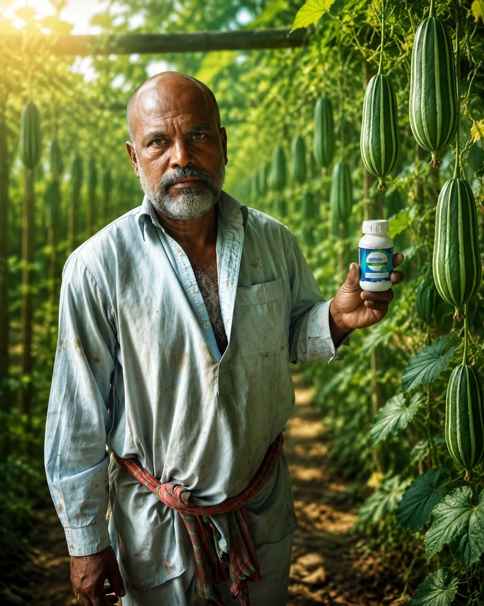

High-Impact Farming Services
We deploy next-generation tools to upgrade traditional farming practices, boosting crop health and operational efficiency.

Autonomous Drone Crop Spraying
Our fleet of commercial agricultural drones delivers ultra-precise bio-fertilizer and organic crop protection spraying. By atomizing liquids into micro-droplets, we ensure maximum crop absorption and 100% uniform coverage.
- Speed: Spray 1 acre of land in just 7 to 10 minutes.
- Protection: Zero crop trampling and no human contact with chemical aerosols.
- Efficiency: Saves up to 90% water and 30% crop protection products.

IoT-Driven Soil Health Analysis
Stop guessing your crop nutritional requirements. We conduct advanced digital soil diagnostics to test pH, moisture, N-P-K levels, and electrical conductivity, providing immediate actionable insights on crop suitability.
- Real-time Data: Instant soil health profiling using advanced sensor probes.
- Custom Prescription: Targeted fertilizing recommendations based on exact soil deficits.
- Yield Improvement: Prevent soil toxicity and optimize root micro-climates.

Scientific Crop Health & Bio-Solutions
We provide diagnostic consulting to identify crop diseases, pest infestations, and fungal outbreaks early. Our team prescribes specialized organic bio-stimulants, micronutrients, and crop protectors to restore foliage health.
- Infestation Control: Fast identification of crop blight, powdery mildew, and pests.
- Bio-Stimulants: Premium, eco-friendly liquid nutrition for maximum crop resilience.
- Continuous Tracking: Direct telephone and WhatsApp advisory support.